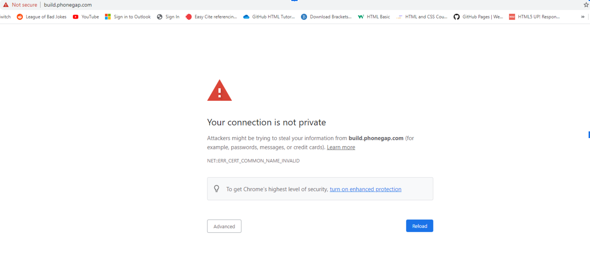
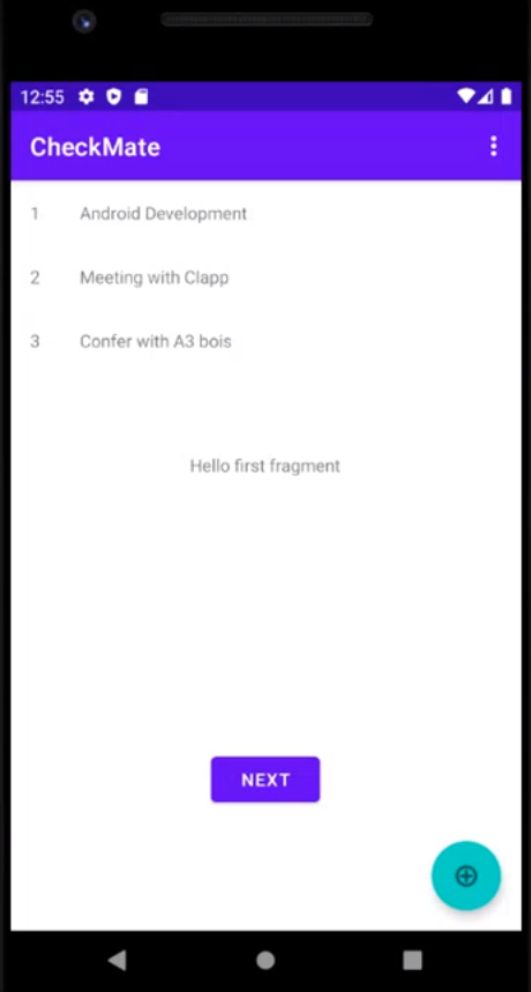
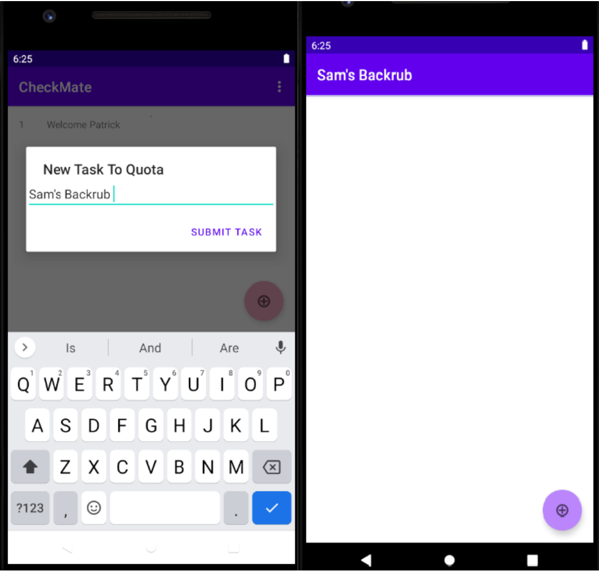
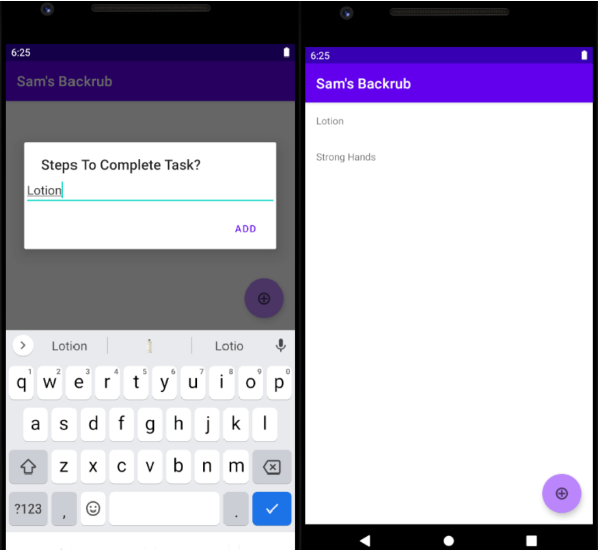
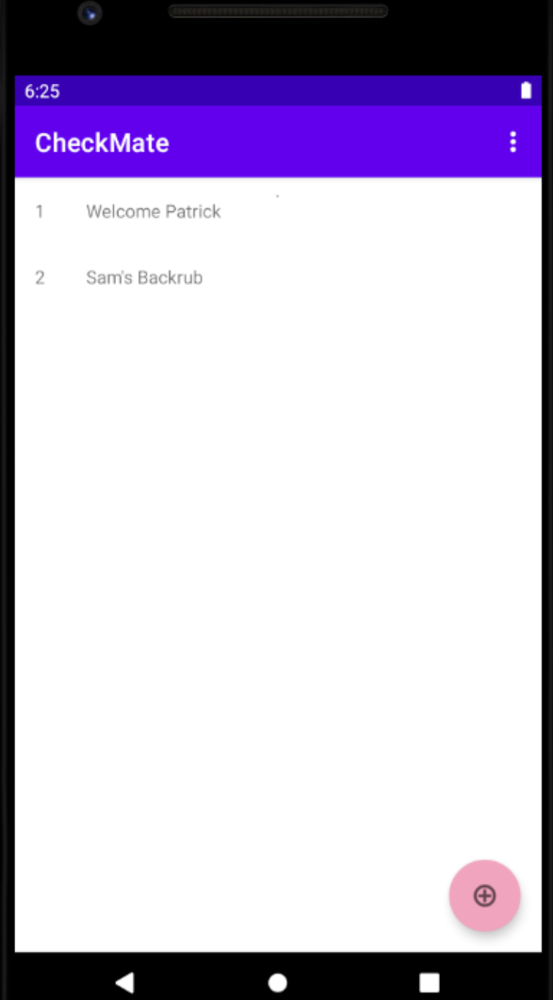
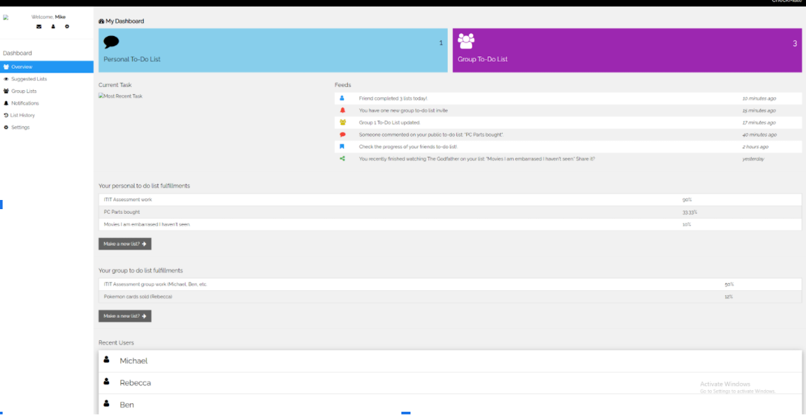
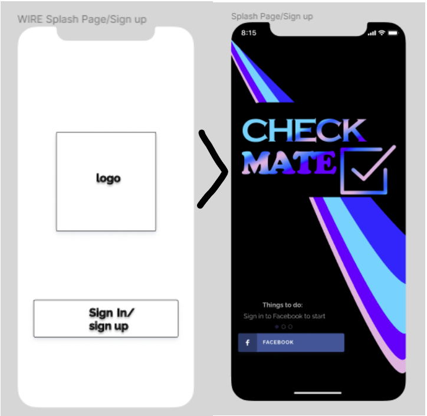

Project
Overview
This project is intended to create a to-do list application that can be used for the user to create their to-do lists in a simple and easy way just with simply pressing buttons. The app can be used to notify and set dates and times for the tasks to be completed keeping the user organised and on track with their tasks. The app will assist with responsibilities and organisation skills in the user’s day to day life. The modern design and layout scheme of the design is easily navigated and good to look at providing an easy going and aesthetically pleasing experience.
The social sharing and group work aspect of the app is intended to make it easier for users in today’s world to work on tasks together and keep track of each member’s progress through the work and setting deadlines for said work. In a world with a constant and substantial growth in the need for virtual group work and sharing due to the growth in the IT industry and a global pandemic forcing people to isolate and avoid contact having said social sharing feature is an amazing feature to have in a to-do list type application, along with the simplicity of the sharing it will have an exceptional outcome for the popularity and usability of the application.
Motivation
This project is an important application for not just the IT industry but most people in the world, the ability to track and create one’s to-do list is very important as it will allow for the users to have and simply and creative way to create their lists. It is also a good way for the user to remember the things they must do along with keeping track of the status of the tasks to be completed as the app allows status updates, deletion of tasks and deadline features that can keep the user in line. The social interactive feature is a very important feature for the current IT trends of today, with the constantly growing industry along with the current global pandemic group work and especially virtual group work is extremely crucial for all users. Having a virtual to-do list that can be shared through social media can make it much easier to keep track of things like group work in work, school etc. and even day to day things like grocery lists. A future employer could see the working and creation of the project as very creative and innovative thinking from all the group members.
Landscape
The closest comparable “to-do list” application widely available would be the Reminders application that comes with iPhones, or similar apps like Google Calendar. These applications host internal lists for the user and store them in the app, which in some instances (Google Calendar) can be accessed on the computer as well. These apps are mainly solo, and may not offer the ability to share to-do lists.
Social media-wise, the main competitors would be well-known giants Facebook, who, with Instagram, Facebook and the many other platforms they own, dominate the social media market (Rodriguez, 2021). These giants introduced and refined the common social media messaging systems we use today and offer specific messaging services. These apps are great for their specific markets but don’t offer the to-do list and sharing capabilities Checkmate is offering.
In terms of group to-do lists, Asana and Stack are common business-driven applications that host similar features. These are used by companies for communication and performance assessment, so don’t really offer a social media aspect, which discourages use outside of work hours.
What these apps don’t possess, which is being offered with the Checkmate app, is the combination of social media, personal to-do lists, group to-do lists, and the ability to suggest to others their own “to-do” lists.
Aims
The project's main aim is to build and design as much of a complete application as possible in the time limit with our minimal expertise. Firstly we decided to learn as much as possible about both the programming and design elements of building an application from scratch. We split our group into two subgroups, with one dedicated to learning programming using Koltin with Android studio and the other group learning the ins and outs of the design progress using Figma as a design tool. This way, both groups can gain knowledge and come out with two or more actual artifacts as evidence of our journey.
Firstly we decided to create a desired feature list to aid and inspire both groups to design and code. This is that feature list
| Feature |
Description |
| Inputting tasks |
The user taps on a text box to type in a description of the task, there will be a submit button and the user will be given a warning asking if they really want to input this task as the app ‘will ensure you complete this task’. |
| Mandatory word count for explanation |
If the user needs defer or completely delete the task, they must write an explanation on why they are deleting the task, the app checks the character count of the inputted text, if it is less than a specific amount an error will appear, saying ‘not good enough, you should still get this done!’
|
| Count of completed tasks |
The app will also count the number of tasks completed which will allow the user to evaluate their productivity for the day. |
| Task quota |
Users can set a quota, so that the app enforces before using the user must put in a minimum number of tasks, this is to incentivise productivity and assist with the solution to the problem the app is intended to solve.
|
| Warnings and notifications |
Users will receive alerts towards the end of the day to remind users of outstanding tasks. |
| Social list features |
| Start new Group to-do list |
The user taps on “new social list” button and has the option to invite friend via a search bar |
| Inputting media suggestion tasks |
The user taps on “new media” and chooses from one of the following categories; film,TV,music, book, other. From here they can use a search bar that will add a preview of the desired media using its respective website eg imdb or Spotify |
| Mark suggestion as completed |
The user will have the option to mark as completed when tapping on the task. This will add a small coloured tick next to the task |
| Rate a group task |
Once a user has marked a task as complete they will have the option to rate out of 5 stars by tapping on a line of stars |
| Update personal/chat colours |
In the profile settings a user can select a unique colour that is used to identify which user has completed a task in a social list |
Design Aims
The UX/UI team had many goals. Firstly we had to find a design tool that was accessible and intuitive. We landed on Figma.com as we had used it before and already had a basic understanding on it’s layout and tools. We began with a template on figma as a basis but then decided to only use it for its assets as we stripped the template to its most basic layout. We then had to start designing our own application and we achieved this through the creation of Wireframes that we could later build upon to create a higher fidelity design mock-up
Programing Aims
Furthermore, an important objective is formulating ideas for and producing functions for the app. We will get a good understanding of the fundamentals of the programming language Kotlin, so we can use Android Studio to begin experimenting for creating functions that will be included in the app, it is essential also that consistent labeling will be in the code for a potential professional programmer to pick up the task from us to further develop the app into a valuable product. This goal gives a platform to base further development off, such as adding more features and functions into the long-term future, it is imperative that Checkmate is future proof and easily upgradable as this will improve the chances of investors funding the development of this project beyond this founding stage.
Website Aim
The website was designed and made to alleviate a problem the app being made on android caused - accessibility. By starting a website, you give users access to the Checkmate app through multiple different venues - phones, computers, consoles, fridges. This allows future users of the Checkmate app to explore different uses of the app, and allows people multiple avenues of exposure to the site.
Plans and Progress
We started by deciding what tool we would be using to design the overall layout of Checkmate. After doing research, we narrowed it down to these few services.
- Zeplin
- InVision
- Figma
- Adobe Photoshop
All had their Benefits, but we decided to go with Figma.com mainly because it is very accessible to the whole team as it is web-based, meaning no matter what device the team uses, they can all access it without downloading a whole program or Updates. Figma can generate a view-only link shared with other group members or as an asset to survey and gather feedback on its usability and design.
Our next milestone was to find a basic template, strip it to its bare assets and build it from the ground up into something of our own. This began with wireframes. The wireframes are a fundamental outline of what our application might look like; it includes low fidelity details and is a skeleton of what we hope to achieve.
Wireframes
Once our wireframes were completed and the group was satisfied with the layout we got to the main design. Here is a breakdown of the current Checkmate application UI/UX design
Checkmate Figma Concept
When designing the current version of the Checkmate application, we took into account Nielsen's Principles of design, such as User control and Freedom. We allow users to exit, redo, and notify them of the consequences of deleting something that satisfies the error prevention design principle we implemented. We attempted to have a consistent minimalistic and dream-like theme so we do not overcomplicate or confuse users. Our dream dark neon dream-like theme is aesthetically pleasing to the eye thanks to the mix of contrasting and complementing Vibrant colours, blurs and glow effects and designed to keep our message that all dreams start with small goals hence a need for the To-do list. The obvious Design Principle, such as Prominence, was implemented using bold tiles and larger text to guide the user's eyes around the application as we desire. Another design principle we have implemented is proximity, as we have similar tasks close to each other helping ease use for the user.
Programming Plans and Progress
Initially when we started the programming aspect of the project we intended to closely follow what we wrote in the A2 assignment and develop the application through adobe phonegap. However we were all greeted with this image and decided this endeavour would not be fruitful.

We next had a team meeting and decided the best way to develop the app would be through Android Studio and the tutorials provided by Raywenderlich . Since we had no prior programming experience in mobile app development and in using Kotlin programming language, we wanted to achieve making a simple task management app without worrying too much about the figma design of our app. We wanted to develop and build on our programming skills through the tutorials provided to be able to in future build the app through our figma designs. Basically our thought process behind this decision was Rome was not built in a day and neither was CheckMate.
TimeFighter
Timefighter was the introductory programming exercise provided by Raywenderlich with the purpose of teaching us the basics of Android Studio. i.e how to manipulate strings in the kotlin programming language, create working buttons and introduce us to android specific functions to make app development easier. The key takeaways from this mini project to begin development on CheckMate were to:
- Create id’s and constraints for each element
- Handle orientation changes (everytime there is an orientation change the app resets without the proper code)
- Convert to an APK and upload to the Android play store.
Checkmate

In the first week of programming the values that you see are hardcoded into the app in an array. Basically we made a recycler view the length of the screen and could add as many values as we liked. Obviously this has no real world practicality and the “hello first fragment” and next button were the wonderful part of programming of the i have no idea how or why they were there feature.

The next week of programming we had developed a better understanding of the tools we were using and progressed further in the tutorials. We learned how to save data using shared preferences, add a second recycler view for the subtasks and allowed the user to implement their own tasks and subtasks. Achieving the minimum functionality requirement we set with the start of the project.

When the user submits a task they’re taken to the subtask screen where they can tap the floating action Button in the bottom right of screen to add the subtasks they need to complete their goal.

Finally when the user presses the back button or exits the app they are taken back to the first screen and can now tap on the task to be taken back to the subtask section of the app.

Future Programming Developments
Notably the programming side of development is very minimal compared to the figma designs and wireframes which is to be expected. Learning the tools and programming to the specifications takes time. Another key challenge was the programming tutorials were a little out of date Android studio is still being developed at a rapid pace and some now common place functionality components such as fragments: (fragments allow the app to work on multiple devices such as tablets and laptops without the need to change code) were hard to follow and code in the tutorial outright did not work because of further updates to android studio.
Fragments
We have emphasized the importance of fragments as these will expand the users that the app reaches. We will make use of fragments to enhance the code’s interactions with the user interface components. The fragments will help with transferring the project to professional software developers. The use of fragments will highlight the necessity of Checkmate being available across as wide a user base as possible.
Android Jetpack Navigation
The potential developers would want to have a solid understanding of the fundamentals of Android Studio. It will be essential to convey a rudimentary understanding of the WorkManager which is a vast library of jobs that must be completed within the programming aspect of the project. This Automated Programming Interface will be integral s to the development of Checkmate.
Animations
We will be making use of Androids animations to improve the usability of Checkmate in terms of user satisfaction. Primarily property animations will be favoured due to them being the most powerful and flexible of all Android animation frameworks.
Website
The website was designed as a side project to the programming to expand on the accessibility of the application and its users. By referencing a template created by w3schools, the website was made in a barebones, skeleton design to give initial users and idea of what the frontpage of the website would look like and what features would be available.
Takeaways from this project were:
- Design a website to build alongside the app
- Make functioning webpages consistent with the figma wireframes and Checkmate programming
- To pitch this to investors, more consistency between the app is needed
- Accessibility goes a long way

Roles
At first, we did not define specific roles for people as to not lock them into a task that they may have felt they were unable to do. By freely allowing people to choose the content they want to work on, we can more efficiently use our group members' strengths to their best abilities.
That being said, we can define the roles of the group in hindsight, as they shined through on their skills.
Project Manager - Michael
Michael was able to kick the action into gear, designing powerpoints and timelines for the group every group meeting which was able to get everyone into the same headspace. Our group communication was lacking in some areas for our A2 assignment so He decided to take on this responsibility to get the group on the same page and get a consistent work output through group commitments after the end of each meeting.
Designers - Ben, Patrick, Sam
The design team consisted of Ben, Patrick and Sam who took over the role of UI design on Figma and smashed it out of the park. Their work on the Figma was split evenly and each member was able to fulfill their work.
UX Designer - Patrick
As the main UX/UI Designer Patrick was responsible for the overall look and feel of the Figma Designs. This started with working out wireframes with Sam and Ben so everyone could understand the layout and design of the mock ups and contribute individually. This was then followed by using Figma to slowly work on the main skeleton of the application and its design/layout whilst gathering feedback and suggestions from the rest of the team. Constant additions and updates were made every day or so from the beginning of the design period until it’s completion to everyone’s satisfaction.
UI Designer - Sam
As a UI Designer, Sam was responsible for adding features and details to the skeletons created by Patrick and adding finishing touches to some screens using the wireframe tool of Figma. He also worked in creating low fidelity wireframes to show and display the basic layout of the user interface before the added colours and formatting. Additions to the wireframes were done frequently and changes were made to improve the user experience and ease of use. Communication was done between the UI designer and the lead UX designer as changes were discussed before implemented in the final end product. Feedback was also given during the process of designing the wireframes and finishing touches were added if necessary.
UI Designer - Ben
Ben's part in the UI design was to look over the design scheme during meetings and give feedback on the overall design and how it would make the user feel while using the project. Ben was there to review the design and give feedback if needed.
Programmers - Michael, Nathan, Josh
On the other side, the programming team consisted of Michael, Nathan and Josh, who set to work coming up with ways to code the app. Deciding on Kotlin/Android apps, Josh later split off to code a website, citing that as his strength.
Back-End Developers - Michael, Nathan
Michael and Nathan worked on the “skeleton” of an app, learning Kotlin/Android to develop the features of an app that would be used for Checkmate. It is their job to also brainstorm strategies for implementing the intended features based on the products of the user interface team.
Front-End Developer - Josh
Josh used HTML to design a website with the intention of fulfilling the app’s features on an multiple-accessibility platform. After attempting to learn Kotlin, he swapped to this role to expand on the app's accessibility and design.
Scope and Limits
As we started the project, we had to discuss and define our scope and limitations for CheckMate and what we would accomplish in the end. We discussed the range of our skills and experience with creating applications and programs with different programming languages and we also discussed our prior knowledge with using UI designing tools like Figma. We ultimately agreed to focus on creating high fidelity and effective wireframes to show an app developer our proposed application and what we want CheckMate to ultimately be able to achieve. We also decided that we would try to create a fully functional version of our ideal application that would satisfy all our functional requirements and features from our feature list that we created early in the development and production phase of our project.
We had ambitious goals that we wanted to set and achieve and ultimately we nearly achieved these goals as we were met with scope creep. Throughout the development stage of programming CheckMate, we encountered time constraints that limited the ability to fully reach our main goal of creating an app that could perform all our desired goals and ambitions so this made us reconsider the scope and limitations of the project. Instead of creating a fully fledged functional application, the programming team decided to create and program the most important parts of our app that would be crucial to display what our proposed plan for the app would look like.
Theoretically, we are creating a base in which app developers can later use to create our proposed project idea of CheckMate. We had to think realistically and consider the experience we have in creating applications and the given time and resources that we had. We shortened our range and scope by a little but in the end, we created effective working features of our app that show the functions and how to use our app, CheckMate.
Tools and Technologies
Tools
- Figma - to design wireframes and CheckMate high fidelity prototype
- IntelliJ IDEA Community edition 2021.1.1 - A kotlin programming IDE to practice kotlin specific functions to aid in developing CheckMate.
- Android Studio version 4.2.1 - To develop App, notably the version in the tutorials we viewed were from 3.5.2 so some code/methods may be outdated.
- Android SDK - Pixel 2 API 30 - an android virtual device used to test the application on.
- W3schools template - Website application designed from initial template.
- Photoshop 2021 - CheckMate logo designed in photoshop.
- Google Docs - Project documents added into individual folders and used to collaborate
- Github - A3 Website developed though Github and template used for website
- Microsoft PowerPoint 2021 - Used to run the huddles and team meetings
- HTML 5 UP Hyperspace template - used for website design.
To produce these artefacts, we used a prototype design platform Figma to plan out the user interface for Checkmate. Figma is a free service so there are no software licenses needed. All of our group members have some experience with using Figma and creating medium fidelity prototypes. We have also made use of Android Studio to program certain features of the app, no license is needed for this tool either, it is a free service including the plugin for Kotlin which is the language used to program. None of our group members have experience with Android Studio, it took some time for our programming team to become proficient in using the tool. Patrick has used Photoshop for previous projects before and the HTML 5 UP template is the same one used for Sam’s A1 assignment.
Testing
Testing is key to identifying and eliminating problems throughout the whole process of design and development. For our application, we have undergone many stages of testing. If development were to continue on "checkmate", many different forms of usability and user testing would hypothetically take place to gather important qualitative and quantitative data that would be used to improve the users' experience and ease of use through constant updates to design and functionality spanning from said data and feedback. It will be necessary to test the app to ensure the app is achieving the goals of potential users, we have used our mockups as low-fidelity prototypes. We knew we succeeded when we were able to understand the product. It was becoming clear about what was to set this app apart from other to-do list apps, which was also a key criterion of the test, the testing was not necessarily intended to test the app itself but it’s adherence to the objectives of the project. Participants in a potential user test, would be people who have poor organization and who generally must complete tasks as part of a group, also those who are more social. The test criteria would be how well the users actively use the app and in terms of their overall productivity with the tasks that the app will track.
The layout and design of our application "checkmate" went through many different stages of design, e.g. wireframes to final concepts and many changes were made throughout. These changes were not made for nothing; they came from potential users' feedback on the prototype designs. This testing was done by simply gathering a handful of potential target end-users and undergoing a small interview at different stages of the Figma design, asking about many aspects of the application, e.g. the strengths and weaknesses of our initial design.
For example, when asked, 'would you prefer a bright and vibrant or dark and neon colour scheme?' 70% of respondents asked for a Dark theme. An example of the feedback being put into action is as follows...

If we were to continue developing the Checkmate application, various testing would be used to gain insight into how users are using the application and use this feedback to improve and adapt to users. Different methods such as:
- Surveys
- Focus groups
- Interviews
- Lab-based testing
- Remote testing
- Eye-tracking
It will be vital in gathering data. Another valuable form of feedback to see if the testing has paid off would be from the App reviews on the Google Play and Apple app store. These reviews will give us an insight into how well we as developers have used all the different feedback methods and results to improve the app rather than hinder its success. It is essential to remember that while the user's feedback is essential, they do not have the final say and are not always correct.
Project Progress Timeline:
Another difficult aspect of project planning is knowing how much time to allow.
You will have something like
36 hours per person for this assignment.
In order to develop a plan for further work beyond the end of this
course, let us assume that you will have an extra 10 hours per week per person for 10 weeks in addition to
this time in order to develop your project. This means that you will have six weeks(Weeks 7 to 12) of the
semester to work on your assignment, with a further 10 weeks after that. This means that your plan will be
for a total of 15weeks, with the first 6 being on this assignment. You will clearly not have the extra 10
weeks to work on the project; this is intended to give you a feeling for how much you would be able to
achieve in that time. This means that the first 6 weeks of your timeline will end
up being your actual progress on this project, with the remaining 10 weeks being your plan for the next
stages. This should be presented in the form of a table, with one row for each week, specifying as best you
can the work for each person for each week. This means that the first six rows of the table will describe
your progress so far, and the remaining 10 your best guess at how the remaining time would work.
This will no doubt change as you work on your assignment, as it will give you a more
precise idea about how long it will take to get things done. This is not an unchangeable contract for
exactly how things will work; that is unrealistic for just about any project. The idea is to get you
thinking about how exactly your time should be allocated to the various tasks involved. It is a good idea to have a milestone (i.e. a specific outcome) for each week of the project
. This may include getting familiar with tools, or reading up on a particular technique or
technology. You should also include time for writing up the final report and any other documentation.
Writing reports always takes longer than you think, especially as you should expect to
re-write any piece of writing that you do at least three or four times.
Project Progress Timeline:
|
Weeks
|
Michael
|
Sam
|
Patrick
|
Ben
|
Josh
|
Nathan
|
|
7
|
A2
|
A2
|
A2
|
A2
|
A2
|
A2
|
|
8
|
A2
|
A2
|
A2
|
A2
|
A2
|
A2
|
|
9
|
Read through A3 Specification Assign roles dot point project
|
Read through Project think about what roles you would be good
in
|
Read through Project think about what roles you would be good
in
|
Read through Project think about what roles you would be good
in
|
Read through Project think about what roles you would be good
in
|
Read through Project think about what roles you would be good
in
|
|
10
|
Get Github website Up and running
|
Work on Team profile and communications
|
Work on a feature list for the app. What features do we need
|
Work on skills and jobs section
|
Work on skills and jobs section
|
Work on a feature list for the app. What features do we need
|
|
11
|
Use raywenderlich.com to learn how to program the app
|
Get home screen and UI done using figma learning tools
|
Get home screen and UI done using figma learning tools
|
Get home screen and UI done using figma learning tools
|
Use raywenderlich.com to learn how to program the app
|
Use raywenderlich.com to learn how to program the app
|
|
12
|
Have a working (simple) task managing app
|
Write about wireframe progress complete project work
|
Write about the design of figma and how users will interact with each
design element of the app.
|
Help Sam with wireframes and polish project work.
|
Create a website template of the App
|
Think of the final app design and pitch
|
This was the progress of the group for the A3 project. The powerpoint presentations
in the group processes and communications section give a better breakdown of the progression we made as
there were sometimes multiple milestones we aimed to hit in a given week. Most of these milestones had a
further breakdown which we verbally communicated to each other in team meetings. Further development on the
project should look something like this.
|
Weeks
|
Michael
|
Sam
|
Patrick
|
Ben
|
Josh
|
Nathan
|
|
13
|
Learn how to use fragments so app can work on multiple devices
|
Conduct surveys and user testing methods to gain feedback on the UI/UX
|
Complete designing another user testing method plan
|
Focus on making sure that the User experience is up to a good
standard
|
Make a pitch for website and how users can interact on the website
app
|
Further develop understanding of Android Jetpack
|
|
14
|
Learn mobile Navigation using Android Jetpack feature
|
Perform a lab based user test. On a group of 10 potential end
users
|
Perform a lab based user test. On a group of 10 potential end
users
|
Help with user testing
|
Survey user feedback alongside user testing
|
Brainstorming and strategising for building functionality with
Kotlin
|
|
15
|
Gain more knowledge on using RecyclerViews which were used in making
the “simple” app
|
Use feedback to adjust prototypes and add features if
necessary
|
Using data from testing adapt current figma prototype
|
Assist with progress in figma prototyping
|
Introduce functionality, link design to app/figma
|
Begin exercising with Android Jetpack, prepare to master Android
animations
|
|
16
|
Learn Android animations for cleaner actions when interacting with
the app
|
Continue adjusting Figma prototype with feedback given from user
testing
|
Using data from testing adapt current figma prototype
(continued)
|
Brainstorm on possible new ideas for functions to add
|
Continuing building and designing
|
Exercising and experimenting with animations to prepare to visually
refine the app
|
|
17
|
Begin working on a fully developed Prototype (testing and debugging
at every stage)
|
Assist with creating a fully functional UX/UI
|
Begin the final UX/UX design with higher fidelity
|
Assist with the design of fully developed prototype
|
Closed beta website access, get user suggestion
|
Begin developing a high-fidelity prototype
|
|
18
|
Continue working on a fully developed Prototype (testing and
debugging at every stage)
|
Continue the final UX/UX design with higher fidelity design
|
Continue the final UX/UX design with higher fidelity design
|
More UI design
|
Work on user suggestions
|
Improving and polish programming products to prepare for
finalisation
|
|
19
|
Complete Prototype,
In dialog with Patrick talk about figma design last chance to change
any features.
|
Perform user testing again with updated version of prototype
|
Perform the final testing phase with end users
|
Polishing off design
|
Polishing off design
|
Formulate user testing plan
|
|
20
|
Final prototype developed begin user testing
|
Update Figma Prototype if necessary
|
Using data from testing adapt to the final Design
|
Analysis user testing data
|
|
Finalise the high-fidelity prototype, prepare for user testing
|
|
21
|
Debug or change any issues users have had with the product
|
Update Figma Prototype to final Design
|
Using data from testing adapt to the final Design (continued)
|
Using the results make changes on UI where needed with Head UX
designer
|
|
Review the code and debug where necessary, prepare the transition the
project to developers
|
|
22
|
Release CheckMate to Android play store begin development on apple
version
|
Begin the transition of the UX/UI design to an apple IOS format
|
Begin the transition of the UX/UI design to an apple IOS format
|
Brainstorm any UI changes that can be made when checkmate is changed
to iOS
|
|
Introduce the artefacts to the developers in order to progress the
app’s development
|
Risks
Throughout the completion of Assignment 3, our group took many risks. We split off the workload between each other as half of the team worked on creating the UI/UX design and another half of the group worked on Programming features for our proposed app. We took risks by trying to learn how to code with a new programming language that we had no prior knowledge with. We also had to meet within the tight deadlines and decide whether to just design a UI or actually program the application and make it functional. Members of our group had to decide what features needed to be completed and whether we had enough time to make a fully fledged working application. We also took risks when we were designing the user interface as some members had no prior experience with using Figma to design an application layout. The tutorials that the programming team used to create and program the application were not up to date, therefore they took a risk and learnt how to create CheckMate by using their own research rather than the given tutorials. Instead of using a different programming language, they were able to quickly learn how to use Kotlin and took a risk to create the final output. Our group also took a risk when we decided to go above and beyond and create a website version of Checkmate that would “fulfill the app’s features on a multiple-accessibility platform”. Overall the team had to define a scope that would be easily achieved within the time given of this assignment. We took risks by choosing difficult to use programming languages like Kotlin and ultimately we adapted and the end result was successful given the risks we took.
Group Processes and Communcation
Our group has communicated very efficiently throughout the project as we all contribute to group discussions and everyone has something to say. We primarily use Facebook Messenger to message each other as it is an easy to use communication tool. For video calls we use Microsoft Teams as we can record them to later display in our final report. In the beginning of the project, we set out a goal to have at least 3 meetings a week so the progression of our tasks were discussed and everyone was on the same page. Our scheduled meetings took place on Wednesday afternoons, Thursday mornings and on Sunday nights. Sometimes group members had other commitments during the time of our meetings such as work. For members that missed group meetings, they were recapped as we had frequent discussions in our Facebook Messenger chat. If we had queries about certain tasks and what needed to be done, the Messenger chat was used to remind each person what they needed to complete. As our classes and lectures were all online, all our meetings were done using Microsoft teams and it was more flexible compared to if we had to meet in the RMIT City Campus. Overall, the communication between the group was done very well and if anyone was struggling with something or needed to follow up on something, our communication channels were used effectively. We also introduced powerpoints that outlined Timelines, project scope and group commits as these all changed on a weekly basis as we got used to the tools and technologies used in making the app.
Group Huddles
Group Reflection
Nathan Donovan
What went well
Our group’s collaboration went very well, our online meetings were highly productive and organized. Our team built an excellent culture and went by a philosophy of ‘One Team, One Dream’ which helped with collective motivation. In Assignment 2 we identified that there was still room for improvement in our teamwork. For Assignment 3 we have built on that, and we improved our teamwork by increasing the frequency of online meetings and broke off into sub-teams around the two key aspects of the project with that being the user interface and programming.
What could be improved
Though we still could improve on timeliness, possibly completing the assignment a couple days before the due date.
At least one thing that was surprising
What was surprising was that we grew ever more acquainted as a group, we had been working together for around two months at that point and were becoming increasingly aware of each other’s strengths and weaknesses.
At least one thing that you have learned about groups
This was beneficial when members may have been unable to attend meetings or participate, we worked as a team to help them catch up, it further helped with productivity in two ways, first it further cemented team spirit and trust and also with no member left behind our team was better able to complete tasks.
Patrick Leonello
What went well
We really excelled when it came to breaking up into sub groups and overall working together and valuing everyone's opinions whilst keeping a team morale and discipline to a high standard
What could be improved
I think overall the only improvement that would need to be made might be setting more small goals for everyone individually
At least one thing that was surprising
I was surprised that we made so much progress in gaining knowledge in terms of design and the programing especially from start to finish of the project
ly aware of each other’s strengths and weaknesses.
At least one thing that you have learned about groups
I have learned that everyone works at their own pace and it’s always good to have a safe space for everyone to ask and answer questions. With the morale we had, I was never afraid to ask anything.
Ben Swain
What went well
I believe as a group we all collaborated in different ways with each other opposed to in the last assignment where we separated the majority of the work into individual tasks to complete. This made the completion of the project, report, and website much easier with time as we completed the other work much quicker. Having the work done sooner left some more time to sort out all the report work, polish up the finishing touches and complete the website.
What could be improved
Overall, I believe there were not many things that could be improved, but small changes could have been made like being more prepared with what we were going to use to program our project as the original idea turned out to be shut down/ not work.
At least one thing that was surprising
The turn out of the prototype project was surprising to me as I have never programmed or worked on application production, the final prototype that was produced by the group was very good looking and worked very well compared to what we wanted.
At least one thing that you have learned about groups
I have learned that group work can be very useful when the group works together and has solid deadlines and knows what task each member has to complete for the final project to come to completion.
Joshua Rowarth
What went well
The group worked together exceptionally well, with high communications levels and consistent work effort. Everyone was able to play to a strength, and we constantly were able to meet and refine our timeframe over time.
What could be improved
In terms of improvement, smaller adjustments to timeframing and introducing some parts of the project (such as the programming side) earlier could have allowed the group a smaller window to improve functionality.
At least one thing that was surprising
The group dynamic was flexible and was a real surprise to be able to put forth an idea which was allowed to be added and worked on. Pitching the website in any other group may have been met with a bit of hesitancy but the ITalians accepted the idea and so it was born.
At least one thing that you have learned about groups
A good, solid group can stick through hardship and can achieve great things in short amounts of time. This group in particular proved that to me and helped me remember that not all groupwork is a slog.
Michael Scaringi
What went well
Think the overall group dynamic was amazing consistently through the timeline of the project. We really improved our group huddles by implementing various powerpoints that outlined goals and deadlines.
What could be improved
I think we could have understood the tools better from an earlier stage and work on the website report could have been started earlier also
At least one thing that was surprising
How Quickly we adapted to these new skills and hit the ground running creating different artifacts
At least one thing that you have learned about groups
I was surprised how everyone was constantly available to answer any questions or queries that a group member had through teams or facebook messenger.
Sam Paredes
What went well
During the completion of Assignment 3, we were able to split off the workload between the group into two sub-groups and we efficiently created low and high fidelity wireframes and a working application that satisfied our scope and limits. Our communication was improved in comparison to Assignment 2 as we increased the number of meetings from 2 a week to 3. We gave feedback to each other and worked to create a final output that we all were satisfied with.
What could be improved
If we chose another programming language we were more familiar with and were given more time to program the application to be similar to the figma wireframes, the final output of the program would be improved. Other than that, I believe that we worked exceptionally well together.
At least one thing that was surprising
While completing this project, I was very surprised by the amount of progress we made with such little time that we were given. In comparison to the last project, the workload was far more and the time we had was also not as long. We adapted and worked harder to meet the deadlines and were able to create a very successful project.
At least one thing that you have learned about groups
I learnt that a group works together well if they have a strong communication and group morales. We listened to each other and all assisted one another and we ultimately were able to complete the task given the deadlines.